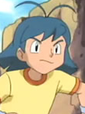

Megumi Urawa is a Japanese voice actress. She is affiliated with Aoni Production. She voiced Asuka from Super Bikkuriman and Peasuke Soramame from Dr. Slump.
- Gender: Female
- Birthday: November 30, 1965
- Hometown: Chiba, Japan

|
|---|
|
Megumi Urawa is a Japanese voice actress. She is affiliated with Aoni Production. She voiced Asuka from Super Bikkuriman and Peasuke Soramame from Dr. Slump.
|
|---|
|  | Shane | Pokemon Advanced Generations | Shane is a resident of Crossgate Town. He and Swablu are going to compete in the Crossgate PokeRinger tournament. |
Go Back to Main Page |
Go Back to Homepage |
|
|
|
OR |
|